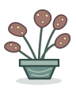

Design preview · No connection to the game
First tour of the Glasshouse
Choose one plant to take home
Committee fern
Forms a subcommittee at the first sign of shade.

Very patient sundew
Waits quietly. Has an excellent record with flies.
Keep this plant · free
Your windowsill
Put plant on windowsill
Visitor view